1. IntroducciónQué se busca al diseñar una base de datos
En este tema nos centraremos en describir el proceso de diseño de bases de datos.
Cuando una organización necesita gestionar su información, puede optar por muchos sistemas, desde un simple cuaderno a una compleja base de datos.
Esta decisión dependerá en gran medida del volumen de datos, su complejidad y el tipo de usuario que accede (roles).
Lo que se busca siempre es desarrollar BBDD escalables y fáciles de utilizar, es decir, que se adapten fácilmente sin perder calidad a nuevas necesidades.
2. FasesLas cuatro fases del diseño
El proceso de diseño está dividido en 4 fases generalmente:
- Fase 1: Recolección y Análisis de requisitos: tras el establecimiento de restricciones o requisitos del sistema y un análisis de los mismos (proceso generado internamente junto con el cliente) se pasa a realizar el primer diagrama conceptual donde se establecerán las entidades importantes y las relaciones que las vinculan y sus atributos. Este proceso puede ser cíclico y con retroalimentación en sistemas de tamaño grande, es decir, requiere continuas consultas y modificaciones.
Ingeniero informático analizando requerimientos y cliente solicitando software - Fase 2: Diseño conceptual: aplicando las reglas que veremos en este tema se traduce el esquema inicial a un modelo lógico o relacional que, en principio, podría servir como esquema inicial de nuestra base de datos. [Modelo Entidad-Relación]
- Fase 3: Diseño lógico-relacional: permite refinar el modelo eliminando impurezas o errores a través de la aplicación de reglas de normalización. [Modelo Relacional]
- Fase 4: Diseño físico: empleando un lenguaje de definición de datos (DDL), como por ejemplo SQL, adaptaremos la base de datos a nuestro sistema generando el código que traduzca ese esquema a un sistema físico empleando para ello un (SGBD) Sistema Gestor de Bases de Datos. Su fin último es lograr la mayor eficiencia y optimización de funcionamiento.
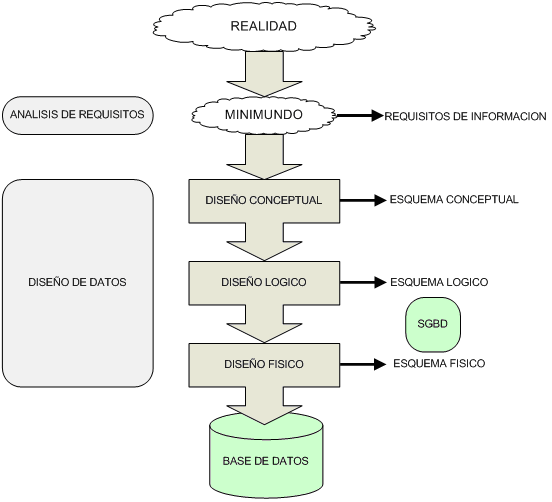
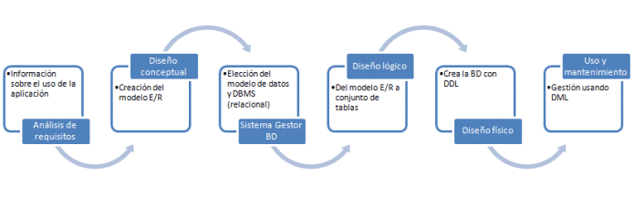
3. Modelo Entidad-Relación: entidades y atributosEntidades, atributos y sus tipos
Es un modelo de datos que representa la realidad a través de entidades, que son objetos que existen y se distinguen de otros por sus características, que llamamos atributos.
Además, estas entidades podrán o no estar relacionadas unas con otras a través de lo que se conoce como relación.
Hay que tener en cuenta que se trata solamente de un modelo de representación, por lo que no tiene correspondencia real con ningún sistema de almacenamiento.
Se utiliza en la etapa de Análisis y Diseño de una Base de Datos, por lo que habrá que convertirla a otro modelo antes de poder empezar a trabajar con ella.
Su principal ventaja es su forma sencilla e intuitiva de reflejar la semántica de los sistemas que modela. Sus principales elementos son las entidades, atributos y relaciones.
Entidad
Entidad: objeto real o abstracto de interés en una organización y acerca del cual se puede y se quiere obtener una determinada información. Ejemplos: personas, cosas, lugares...
Representación:
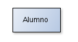
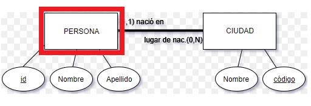
Según el Instituto Nacional Estadounidense de Estándares (ANSI) se define como una persona, lugar, cosa, concepto o suceso (real o abstracto) de interés para la empresa.
Reglas:
- Debe tener existencia por sí misma (deben existir elementos de ella en nuestra base de datos).
- Cada elemento debe poder distinguirse de los demás.
- Todos los elementos de una misma entidad tienen los mismos atributos.
Ejemplo: la entidad persona representa a todo ser humano con una serie de atributos comunes (DNI, peso, nombre, etc.), pero NO hay dos personas iguales.
Atributo
Atributo: propiedad o característica asociada a una determinada entidad y, por tanto, común a todos los elementos de la entidad. [Esas características que hacen que unas entidades se distingan de otras]
Ejemplos: entidad producto: nombre, cantidad, categoría...
El dominio es el conjunto de posibles valores permitidos para un atributo. Por ejemplo, el atributo color posee de dominio todos los colores del arco iris o el atributo edad un rango de valores.
Representación:
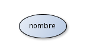
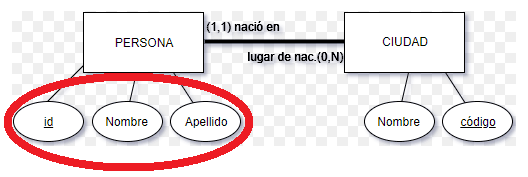
Tipos de atributos
a. Funcionalidad:
- Atributo Identificador (AI): atributo o conjunto mínimo de atributos que distinguen unívocamente cada elemento de la entidad del resto de atributos. [Clave Primaria]
- Atributo Descriptor: caracteriza un elemento pero no lo diferencia del resto.
Si solo es un único atributo se denomina principal (AIP).
A los posibles AIP se les denomina Candidatos (AIC); de ellos solo uno como AIP y el resto se conocen como Alternativos (AIA).
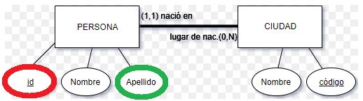
b. Opcionalidad:
- Obligatorio: necesariamente debe tener un valor en cada elemento de la entidad.
- Optativo/derivado o calculado: puede tomar valores nulos.
Los atributos obligatorios más clásicos son los que forman parte del AIP.
Representación:
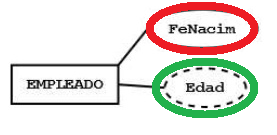
Atributos derivados o calculados: los atributos derivados (o calculados) son aquellos atributos cuyo valor puede ser deducido realizando algunas operaciones con otros atributos de la misma entidad o de otras entidades.
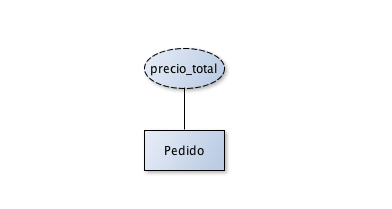
Ejemplo: si tenemos una entidad «partido» y un atributo «resultado» podría ser nulo su valor si todavía no se ha jugado.
c. Cardinalidad:
- Univaluado: un único valor.
- Multivaluado: para un mismo elemento de la entidad puede tomar varios valores (ejemplo clásico: una persona puede tener varios teléfonos de contacto).
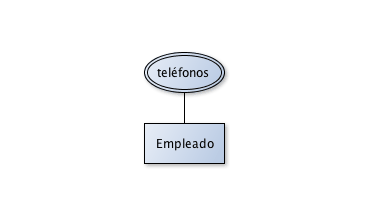
d. Carácter:
- Simple: atributo cuyo valor debe introducir el usuario.
- Derivado: campos calculados a partir de datos simples. Ejemplo clásico: atributo edad, ya que se puede calcular a través de la fecha de nacimiento. [Visto antes]
- Estructurados o compuestos: son atributos que pueden ser divididos en subpartes; estas constituirán otros atributos con significado propio. Por ejemplo, la dirección del empleado podría considerarse como un atributo compuesto por la calle, el número y la localidad.
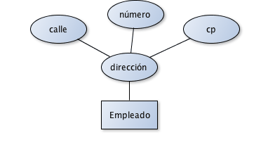
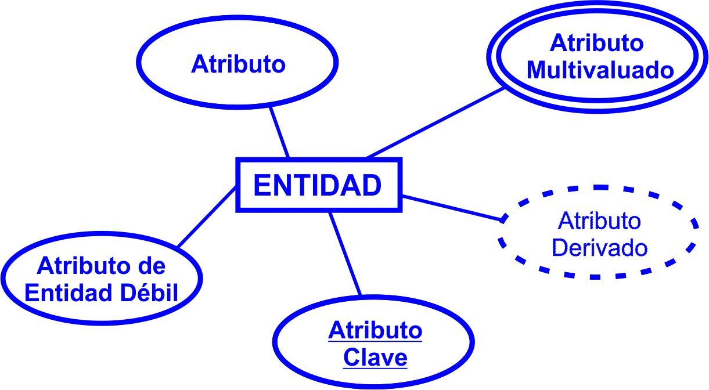
Tarea: realiza el modelo E-R para el siguiente caso
Una empresa desea conocer las personas que trabajan en ella requiriendo para cada una de ellas conocer los siguientes atributos. Tras la reunión con el cliente, el desarrollador ha extraído las siguientes condiciones para los distintos atributos que a continuación se muestran:
- Dni: debe ser obligatorio, univaluado y AIP.
- Apellidos: opcional y univaluado.
- Teléfono: opcional y multivaluado.
- E-mail: obligatorio, multivaluado y AIA.
Ver solución
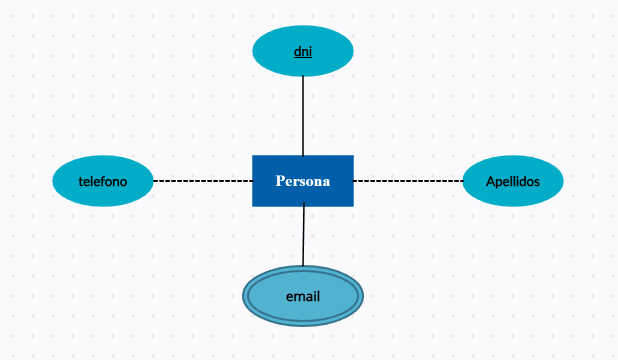
3. Modelo Entidad-Relación: relacionesRelación, grado, cardinalidad y casos especiales
Relación: asociación entre una o más entidades.
Ejemplos:
- La relación de las personas y su país de nacimiento (relación: «nace»).
- Las entidades alumno y asignatura podrían estar relacionadas entre sí puesto que un alumno cursa una asignatura (o varias).
Propiedades:
- Nombre: identificación única.
- Grado: número de entidades sobre las que interviene la relación.
- Tipos de correspondencia: número máximo de elementos de cada tipo de entidad que pueden intervenir en ella.
Representación:
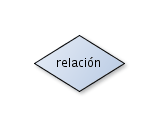
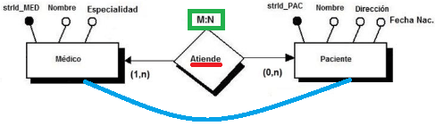
Nota: una relación puede tener sus propios atributos.
Grado: relaciones binarias
Existirán situaciones en las que a la hora de analizar los requisitos interpretemos que en una misma relación hay más de dos entidades involucradas. A este tipo de relaciones se les llama relaciones ternarias, cuaternarias, etc.
¡Importante! [Transformar de E-R a Relacional] No tendrá la misma facilidad transformar a tablas una relación ternaria que una binaria; probablemente debamos volver a hacer un estudio a la hora de transformar el modelo E/R. Para evitar esto, trataremos de plantear siempre relaciones binarias frente a relaciones ternarias.
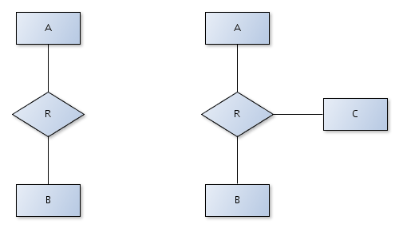
Si nuestra primera interpretación es una relación ternaria, trataremos de descomponerla en relaciones binarias dando sentido a la relación a través de una nueva entidad relacionada con las entidades previas.
Por ejemplo: en una base de datos para una tienda, en la que necesitamos saber qué productos ha comprado cada cliente y qué trabajador los ha vendido, podemos plantear una relación entre comprador, vendedor y producto, obteniendo una relación ternaria.
Sin embargo, también podemos crear una nueva entidad llamada venta con ciertas propiedades (fecha, precio, modo de pago) y relacionarla con las tres entidades previas:
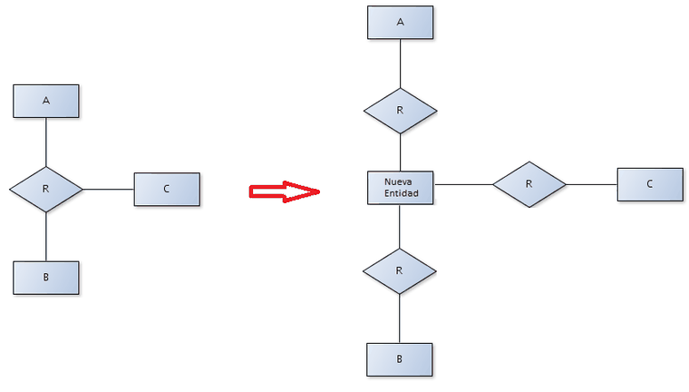
Cardinalidad
- Parcial
- Total
Cardinalidad parcial o «clase de pertenencia» (0, 1, N|n, «,» y paréntesis)
Especifica qué número de elementos de una entidad participan o no con otra mediante la relación establecida.
Si todo elemento de «A» debe estar asociado con al menos otro de «B», se dice que la clase es obligatoria y su cardinalidad mínima es uno.
Por el contrario, si un elemento de «A» no requiere estar relacionado con otro de «B» se dice que la cardinalidad es optativa y su cardinalidad mínima es 0.

1. Relación uno a uno. En esta relación una entidad de tipo A solo se puede relacionar con una entidad de tipo B, y viceversa.
Por ejemplo, si suponemos dos entidades «Curso» y «Aula», relacionadas a través de una relación «Se imparte», podremos suponer que un «Curso» se imparte en un «Aula» y en un «Aula» solo se puede impartir un «Curso».
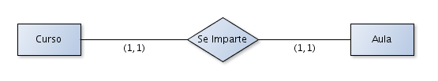
2. Relación uno a muchos. Indica que una entidad de tipo A se puede relacionar con un número indeterminado de entidades de tipo B, pero a su vez una entidad de tipo B solo puede relacionarse con una entidad de tipo A.
Si suponemos una entidad Propietario y otra entidad Vehículo relacionadas a través de una relación Posee, podremos suponer que un Propietario puede poseer varios Vehículos, mientras que cada Vehículo solo puede pertenecer a un Propietario.
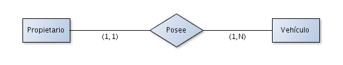
3. Relación muchos a muchos. En este caso, tanto las entidades de tipo A y B pueden relacionarse con un número indeterminado de entidades del otro tipo.
Con las entidades Alumno y Asignatura y una relación Cursa, podremos suponer que un Alumno cursa varias asignaturas mientras que una Asignatura la cursan varios Alumnos.
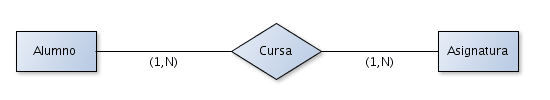
Cardinalidad total (en mayúsculas, dos puntos y sin paréntesis)
Es una cardinalidad que nos hace ver rápidamente la participación de dos entidades en una relación.
Se obtiene a partir de los máximos de las cardinalidades parciales de la relación.
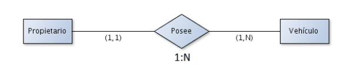
- Uno a uno (1:1): cada elemento de la entidad A se relaciona con uno único de la entidad B.
- Uno a varios (1:N): un elemento de A se relaciona como máximo con varios de B, pero cada elemento de B solo se puede relacionar con uno de A.
- Varios a varios (N:M): un elemento de A se relaciona con uno o varios de B y viceversa.

Atributos de una relación
Existen situaciones en las que a la hora de modelar ciertos requisitos, nos encontramos con que hay ciertos datos que debe almacenar la base de datos que no son características realmente propias de ninguna de las entidades que conforman una relación.
En esos casos es probable que dichas propiedades pertenezcan a la relación en sí.
Ejemplo: un alumno puede cursar varias veces la misma asignatura, por lo que debemos almacenar el año en que la cursa.
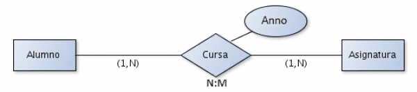
Casos especiales
- Reflexiva: se da entre elementos de la misma entidad.
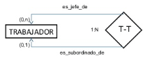
Relación reflexiva 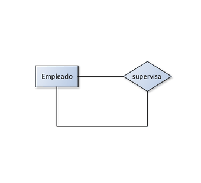
Una empresa en la que algunos empleados hacen de supervisor de otros - De grado 3 o mayor: si en la relación intervienen 3 o más entidades.
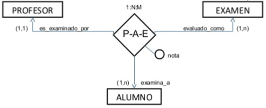
Relación de grado 3
Ejercicios de relaciones
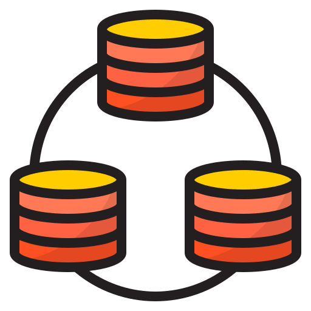
3. Modelo Entidad-Relación: entidades débilesDependencia y consideraciones generales
Entidades débiles: son aquellas que no tienen sentido sin la existencia de otra; se establece así una relación de dependencia pudiendo tener su propio AIP.
Representación:
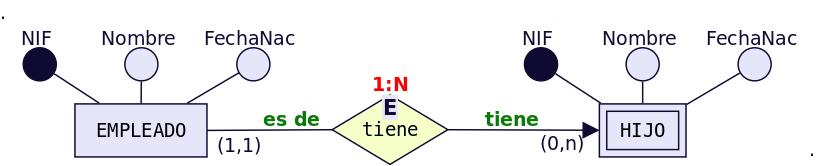
Si el empleado se va de la empresa, no tiene sentido seguir almacenando a los hijos de este.
Todas las entidades de este tipo ocurren en relaciones de correspondencia de tipo 1:N.
Consideraciones generales
- Una entidad que dependa de otra por su AIP no tendrá sentido sin la existencia de esta última.
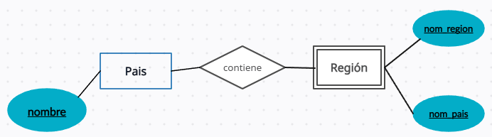
Dependencia en identificación Un país está en una región, y en una región hay uno o muchos países. La «Región» es la entidad débil porque si no existen países en ella, no es nada. Y es «dependencia en identificación» ya que la entidad «región» necesita el «nombre», que es el AIP de la clase fuerte «país». Y ella lo único que proporciona son atributos descriptores.
- Una relación de cardinalidad N:M nunca tendrá entidades débiles. La razón es que, al borrar un registro de la entidad fuerte, podría seguir existiendo otra relación de la débil con otro registro de esta misma.
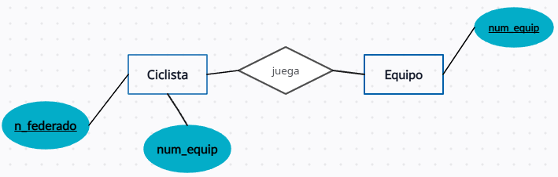
Relación entre ciclista y equipo Si un ciclista está en muchos equipos, y un equipo tiene muchos ciclistas (relación N:M). Si ponemos que la clase ciclista es dependiente del equipo (porque si no hay equipo no hay ciclistas para ese equipo), si borro la clase equipo, deberían desaparecer los ciclistas de ese equipo si la relación fuera 1:N, pero como hemos dicho que es N:M, el ciclista pertenece a varios equipos y, por tanto, si yo borro la clase equipo el ciclista no depende de ese equipo borrado porque sigue estando en otros. Por tanto, no depende el ciclista de un equipo.
4. Modelo Entidad-Relación ExtendidoJerarquías, generalización y especialización
Jerarquía: entidad supertipo que agrupa los atributos y relaciones comunes a los distintos subtipos, que serán versiones reducidas del supertipo con sus propios atributos y relaciones.
Se forma de dos modos:
- Por generalización: varias entidades comparten atributos y/o relaciones de modo que se crea un supertipo de ellas.
- Por especialización: varios elementos de una entidad se diferencian en algún atributo y/o relación, así que se reflejan estos hechos mediante la creación de subtipos.
Representación:
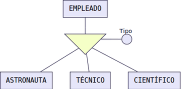
Existen dos tipos de empleados que se relacionan de forma diferente con otros objetos del sistema, pero que a su vez pueden tener gran parte en común.
Por ejemplo, trabajan de forma diferente pero muchos de los datos personales que almacenaremos de ambos son comunes.
Es por eso que el objeto Empleado se puede considerar una generalización de los dos tipos de trabajadores que hay en el sistema. Todos aquellos atributos y relaciones que tengan en común serán atributos y funcionalidades del objeto Empleado y los atributos y relaciones que tengan como trabajadores especializados (Encargados o repartidores) serán representados en la correspondiente entidad.
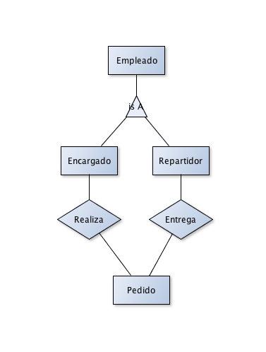
Características
- Todo elemento de un subtipo es también del supertipo. Sus cardinalidades serán (1,1) en supertipo y (0,1) o (1,1) en subtipo.
- Todo atributo del supertipo pasa a serlo también del subtipo.
Propiedades
- Total/parcial: todos los miembros o elementos del supertipo son de algún subtipo existente (total) o su contrario (parcial).
- Disjunta/solapada: ninguna ocurrencia de un subtipo puede pertenecer simultáneamente a otro (disjunta) o al contrario (solapada).
Ejemplos
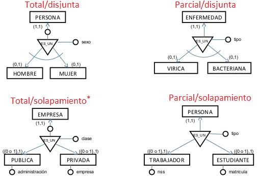
* Si puede darse el caso de que una empresa pueda tener capital público y privado a la vez.